Get started
virgoOS design guide
How the virgoOS interface looks, behaves and speaks: the node UI, Setup and fleet. Use it before you design a screen, a dialog or a single control, and when you review one.
How to use this guide
- Find the closest existing screen in the app and copy its shape. Every page type, control and message already has a home here.
- The examples on these pages are drawn with the app's real colors, type and icons, in both themes. Switch the theme at the top right.
- Green is how virgoOS does it. Red is a mistake that has been made before.
- When nothing here answers your question, ask before inventing a new pattern.
src/assets/scss and the text version for coding agents is DESIGN.md. When a rule changes, change all three.Principles
Foundations
Patterns
Get started
Before you ship
Go through every line for every new or changed screen.
- It matches the closest existing page type; any new pattern was agreed first.Layout
- It works in light and dark mode.Themes
- It works at phone width; nothing scrolls sideways and no action is lost.Layout
- Loading, error, empty and no results states exist.Empty states
- Colors follow their meaning; nothing is colored for decoration.Color
- Labels sit above values; single-line rows are centered.Layout
- Icons use the right weight and their full class names.Icons
- Destructive actions are red and confirmed; data loss needs an acknowledgment.Dialogs
- Every form validates with the house wording and sets autocomplete.Validation
- Copy is in sentence case, uses the settled words and no dashes as punctuation.Content
- No inline styles, no fixed colors, no custom CSS that a class could replace.Spacing
- The user docs and their screenshots are updated if the screen changed.Introduction
Foundations
Color
virgoOS is mostly neutral. Color is reserved for meaning: what can be clicked, what is healthy, what needs attention. A color means the same thing on a badge, a dot, an icon, a chart or a button.
Meaning
The health ladder
Health is one scale from green to red. When several conditions apply to one thing, show the worst.
Direction
Network traffic always uses blue with an arrow down for download (RX) and purple with an arrow up for upload (TX), in charts, tables and labels.
Surfaces
Surfaces are translucent layers over the page, so they work on any background and in both themes. Pick a level, never a gray.
Text
| Level | Example | Use for |
|---|---|---|
| Body | The name the node answers to | Values, titles, everything by default |
| Secondary | The name the node answers to | Descriptions under section titles (fg-emphasis-secondary) |
| Muted | The name the node answers to | Small labels, empty state titles, chevrons (fg-4) |
Guidelines
Snapshots are taken every 15 minutes and kept for a year. Edit schedule
Snapshots are taken every 15 minutes and kept for a year.
Foundations
Themes
virgoOS has a light and a dark theme. People pick Auto, Light or Dark under Theme in the account menu; Auto follows the device. Both themes come from one set of tokens, so a screen built with tokens works in both without extra work.
How it works
- Every color token holds a light and a dark value (
light-dark()); the browser picks one from the active theme. - The token's role never changes between themes; only its value does. "Card" is a card in both.
- Shadows are stronger in dark mode so raised surfaces still separate from the page.
- Illustrations carry both palettes and switch with the theme.
Same screen, both themes
Guidelines
bg-1, bg-2, fg-4); they adapt.bg-gray-050 as a surface; in dark mode the text turns light on light.- Check every screen in both themes before it ships.
- Fixed scale colors (
green-500,red-100) are for meaning: badges, dots, bars. They are designed to read on both themes.
Foundations
Typography
One typeface, Inter, in a short scale. Hierarchy comes from size and a few weights, not from color or capitals.
Typeface
Inter (the variable version), falling back to the system interface font. Code, logs and terminals use the system monospace font. Never add another typeface.
Scale
Weights
| Weight | Example | Use for |
|---|---|---|
Lighter (fw-lighter) | Hostname | Small labels above values, labels inside badges |
| Normal (400) | 192.168.1.20 | Body text and values |
| Medium (500) | Trusted proxies | Headings and titles |
| Semibold (600) | Expand pool | Emphasis inside a tooltip or message; sparingly |
Guidelines
- Numbers that line up in columns or update live use tabular figures (
numeric-tabular). - A unit next to a big number is smaller and secondary: "24 %", not "24%" at the same size.
- A term that has an explanation gets a dotted underline (
tooltip-hint) and a tooltip: 99% cache hit. - No all-caps headings. Uppercase is kept for a few small labels: menu section headers and dashboard tile status badges.
Foundations
Icons
All icons come from Phosphor. The weight of an icon tells its role, so one screen never mixes weights for the same job.
Weights
Size and color
- Icons size with the text around them; use the size classes (
icon-2xstoicon-2xl) only for a deliberate step. - Icons stacked in a column (menus, lists) use fixed width (
icon-fw) so their labels line up. - Icons take the text color. Color one only for its meaning: green start, red stop, orange warning. A disabled icon is
gray-500. - Write the full class name,
icon-pen. Never build it from parts (icon-${name}): the build keeps only icons it finds written out, so a built name disappears.
Guidelines
Foundations
Illustrations
Small isometric scenes on a rounded platform, with brand blue accents, green for success and red for errors. They mark a moment: nothing here yet, nothing found, something finished or went wrong. They move gently and follow the theme.
Library
Guidelines
- One illustration per empty, final or full-screen state, centered above one short sentence. Never as decoration elsewhere.
- Reuse the one that fits;
no-results.svgserves every search. - A new illustration is generated by
scripts/illustrations.jsin the same style and checked inscripts/illustrations.html. Never draw one by hand or take one from elsewhere. - Small spaces (a card, a menu) get text only, no illustration.
Foundations
Spacing
All space comes from one scale, applied with Bootstrap's spacing utilities. Space groups things: the closer two elements, the more they belong together.
Scale
Negative steps mt--1 to mt--5 pull an element up for optical alignment.
Applying space
- Use the utilities:
p-5,mb-3,gap-3,gx-7 gy-3. Lay out siblings with flex or grid and a gap, not margins on each child. - Cards pad their content by step 5 (1rem).
- Stock Bootstrap sizes come from modifiers (
btn-sm,btn-group-sm), never from custom padding. - When nothing covers it, add a scoped modifier class in SCSS. Never
style="", not even for a CSS variable.
Guidelines
<div style="display:flex; gap:12px">
.my-btn { padding: 3px 9px; }Foundations
Layout
Every page is one of four types, and every type adapts from a phone to a wide desktop. Copy the closest page instead of composing a new layout.
Page types
List
Apps, Users, Folders, Storage, Services. Search and filter on the left, the count on the right, a full width sortable table. The whole row opens the item; it ends with the ⋮ menu and a light chevron.
| App | CPU | State | ||
|---|---|---|---|---|
Nextcloud nextcloud.virgo.univrs.cloud | 2.52% | 3 / 3 | ||
Traefik traefik.virgo.univrs.cloud | 0.42% | 1 / 1 |
Detail
One item, at its own address. Back button, image, name with badges and its link, the action tray top right. Facts on the left with labels above values, underline tabs with counts on the right.
Settings style
Network, Settings, About, Profile. Section name and one sentence on the left, one card on the right that starts with an icon tile. Routine actions are links with an icon.
Dashboard
Metric tiles in one strip, then app shortcuts in labelled groups. Cards are flat and lift with a soft shadow on hover.
Screen sizes
| Width | What changes |
|---|---|
| under 576px | Phone: no side menu. A bar at the bottom with the logo, the account and a ⋮ button that opens navigation in a drawer sliding up. |
sm 576px | The side menu appears, and can be collapsed to icons. |
md 768px | Tables show their secondary columns, detail pages show the action tray, buttons show their labels next to the icon. |
lg 992px | Settings style pages split into two columns. Apps open in floating windows. |
xl 1200px | The dashboard lays shortcuts out in a fluid grid. |
2xl 1400px | Detail pages keep the facts column beside the tabs. |
- Design the phone width first. Columns start full width (
col-12) and split fromlgup. - Use the breakpoint prefixes (
md:d-table-cell,lg:col-4,md:d-none), not media queries. - Never drop an action on a phone; move it into the ⋮ menu.
- The page never scrolls sideways.
| User | ||
|---|---|---|
emma emma@example.com |
| User | Name | Groups | State | |
|---|---|---|---|---|
| emma | Emma Collins | emma@example.com | staff | unlocked |
Alignment
Foundations
Motion
Motion in virgoOS is small and quick. It confirms a press, shows that something is alive or working, and helps a surface appear. It is on for everyone: there is no reduced motion fallback, by choice.
Motion in use
| Where | What moves | Timing |
|---|---|---|
| Buttons | Shrink slightly on press (scale .97) | with the color transition |
| Dashboard cards | Lift with a soft shadow on hover | .3s ease-in-out |
| Badges, theme switch | A hidden label slides open on hover or selection | .25s ease |
| Menus, dialogs, drawer | Fade and scale in from the trigger | Bootstrap's overlay easing |
| Running work | The gear or refresh icon spins; download bars are striped and moving | while the job runs |
| Illustrations | Float, blink and pulse in a slow loop | 2 to 4s |
Guidelines
- Animate to give feedback or show state, never to decorate.
- Keep transitions between .15s and .3s. Only loops (spinners, illustrations) run longer.
- A spinning icon means work is happening now; stop it the moment the work ends.
- Don't add
prefers-reduced-motionblocks; the setting is off on purpose.
Foundations
Content
Words are part of the design. virgoOS speaks plainly, from the user's side of the screen, in short sentences. Things are named by what people recognize, not by how the system is built.
Case and wording
- Sentence case for titles, buttons, labels and menu items: "New user", "App center", "Shut down".
- A button says what happens: "Create", "Roll back", "Yes, delete". Never "OK" for an action, never "Submit".
- A description is one sentence that says what the thing is for: "Where the weather on the Dashboard is for."
- Don't restate validation rules in descriptions or help; the messages already say them.
| Say | Not |
|---|---|
| Logged in as | Signed in as |
| Sign in, Sign out | Log in, Log off |
| Setup | Setup wizard, the wizard |
| virgoOS | VirgoOS, Virgo OS |
| Dashboard (the page only) | "the dashboard" for the whole interface |
| univrs node | virgoOS node |
Punctuation
Whether text ends with a period depends on what it is. A full sentence gets one; a name, label or short phrase doesn't.
| Kind | Example | Ends with |
|---|---|---|
| Toast title | Session ended. | period |
| Description | The name the node answers to. | period |
| Tooltip, a sentence | The pool mixes drive types. | period |
| Confirm question | Are you sure you want to delete the user emma? | question mark |
| Tooltip, an action | Expand pool | nothing |
| Tooltip, a status | Snapshots disabled | nothing |
| Title, label, button | New user, Default gateway, Create | nothing |
| Badge | locked, 3 / 3 | nothing |
| Placeholder | "Search", "IP, CIDR, or hostname", "https://" | nothing |
| Validation message | Can't be empty | nothing |
| Something in progress | Creating pool..., Checking availability... | three periods |
- No em or en dashes as punctuation, anywhere. Use a comma, colon, period or parentheses. In page titles, use "|".
- A missing value shows a dash (—) on its own, never "N/A", "null" or a blank.
Numbers and units
| Kind | Write |
|---|---|
| Sizes | 649 GiB, 1.86 TiB (binary units, a space before the unit) |
| Rates | 139.0 Mbps, 251.6 Kbps |
| Percentages | 24% in text, "24 %" with a smaller unit for a big metric |
| Temperature | 41 °C |
| Durations | Uptime: 5d 7h, up 4d 6h 17m 42s |
| Counts of parts | 3 / 3, with spaces around the slash |
Guidelines
Romanian
Romanian copy is written to read as if a Romanian wrote it, not translated word for word from English. Do the naturalness pass every time.
Patterns
Common actions
The same action always looks the same, wherever it appears. The weight of the control follows how important and how risky the action is.
Buttons by weight
| Control | Use for |
|---|---|
| Create | The one main action of a dialog or step, placed last. At most one per view. |
| Cancel | Cancel, and the page action at the top right (New user, App center). |
| Shut down | Removes, stops or interrupts something. |
| Edit | Routine actions inside a card: Edit, Add, Refresh. |
| Toolbars and trays; always with a tooltip naming the action. |
There are no green, orange or yellow buttons.
Actions
| Action | How it appears |
|---|---|
| Add, New | Page action top right ("New user"), or Add inside a card. Opens a dialog. |
| Edit | Edit on the card, or a ⋮ menu item. Opens a dialog. |
| Start, Restart, Stop | Icons in the action tray (green play, neutral restart, red stop) and in the ⋮ menu. Restart and Stop ask for confirmation. |
| Kill, Delete, Remove | Red ⋮ menu items, at the end of the menu, always confirmed. |
| Update | First item of the ⋮ menu, with an arrow down. A green badge on the item and the menu tells that one is available. |
| Refresh, Sync | which spins while it runs, or Refresh in a card. |
| Copy | A small after the value; see Copy to clipboard below. |
| Cancel | Outline button left of the main action. Closes without changes. |
| Close | only on toasts and on dialogs that show information without a form. |
| Reset | "Reset filters" at the end of the filter menu. |
Copy to clipboard
Values people paste elsewhere (a MAC address, a serial number, a folder address) can be copied with one click. The copied text is exactly the value shown.
Friction follows impact
| Impact | Example | What we do |
|---|---|---|
| Easy to undo | Toggle traffic, change sort | Act at once |
| Disruptive | Restart an app, reboot the node, delete a user | Confirm with a question that names the thing, and a red button that says what happens |
| Loses data | Roll back a folder, replace a drive | Confirm, and keep the button disabled until the acknowledgment is ticked |
Guidelines
Patterns
Menus and disclosures
Things that open from a click: the ⋮ menu with an item's actions, the action tray on detail pages, the account and filter menus, small popovers. They open on a click, one at a time, and close on a click outside or Esc. Tooltips open on hover and only explain.
The ⋮ menu
Holds an item's actions. Grouped with dividers: update, then start, restart and stop, then removal. Each item has a fill icon. Destructive items are red and come last.
The action tray
On detail pages the common actions sit as icons in a soft tray, with the ⋮ menu at its end for the rest. The tray always shows the same buttons; the ones that can't run are gray. Below 768px the tray folds into the ⋮ menu.
Tooltips
A tooltip names an icon-only control or explains a term or a state. It never holds something people must read to continue, and it never repeats the visible label.
Other disclosures
- Account menu: "Logged in as", Theme (Auto, Light, Dark), links, Sign out.
- Filter menu: see Filtering.
- Popover: a small picker that belongs to one field, such as the shortcut icon search.
- Details toggle: a chevron that rotates when a row expands.
- Menus never hold a form that needs saving; that is a dialog.
Patterns
Dialogs
A dialog is for a short task the user comes back from to the same page. It blurs and grays the page behind it, so use one only when the task needs full attention.
When to use
- Creating or editing one thing from the page you are on: New user, Edit host, Add trusted proxy.
- A list that belongs to one row: a user's sessions.
- A focused task with steps or a picker: App center, Expand pool, Replace drive, Restore snapshot.
- One yes or no before something destructive: the confirm dialog.
- Looking at one item: it has its own detail page.
- Turning a setting on or off: a switch that applies at once.
- Reporting a result or a running job: a toast.
- Explaining something: a tooltip or help text.
- Taking over the node, like a system update: a full page.
Anatomy
- Header: the title only, in sentence case. A close button only on dialogs without a form (Sessions).
- Body: scrolls under the header and footer, which float with a blurred background.
- Footer: Cancel (outline) pushed right, the main action (solid) at the far right.
- Every dialog root has
tabindex="-1".
| Size | Use for |
|---|---|
dialog-sm 300px | A question or a few fields: confirm, Location, Fleet, Add trusted proxy |
| default 500px | A form: New user, Edit host, SMTP server |
dialog-lg | A picker or tree: Expand pool, Replace drive, the snapshot browser |
dialog-xl | A table or catalog: Sessions, App center |
Form dialog
New user
Create A New User Account
Please fill in all the required fields below. Fields marked with * are mandatory.
Confirmation
Ask a question that names the thing. The confirm button is red and says what happens. When data can be lost, it stays disabled until the acknowledgment is ticked.
Confirmation
Are you sure you want to delete the user emma?
Confirmation
Rolling back Photos replaces its files with the snapshot from 12 Nov.
Warning!!!
Are you sure? This action cannot be undone.
Patterns
Forms
Forms live in dialogs and in Setup. They ask only for what is needed, in a sensible order, with floating labels and the main action at the bottom right.
Fields
- Every field has a floating label inside it: short, sentence case, no colon ("Email address", "Confirm password").
- Group related fields; separate the groups with space.
- Pre-fill what the system already knows.
- An on/off setting outside a form is a switch that applies at once. A yes/no inside a form is a checkbox, worded as a question or a statement.
- Help that explains a field sits in its label as a hint, not as a paragraph above the form.
Placeholders
A placeholder is a single word or the format the field expects ("IP, CIDR, or hostname", "https://", "###.###.###.###"), shown only while the field is empty. Only search fields use one instead of a label. It never gives instructions.
Buttons
- The main action is named after what it does ("Create", "Save", "Register"), never "Submit" or "OK".
- While it runs, the button is disabled and says what is happening: "Creating pool...", "Signing in...". It can't be pressed twice.
Autocomplete
Only the user's own login gets real values, so the browser can fill and save it. Everything else is off, so a saved password never lands in the wrong field.
| Field | autocomplete |
|---|---|
| Username when signing in | username |
| Password when signing in | current-password |
| The user's own new password when signing up, or in Setup | new-password |
| The user's own name when signing up | name |
| 6-digit sign in codes | one-time-code |
| Everything else: other people's details (New user, resetting a password), password changes in a profile, service credentials (SMTP, the fleet account in Setup), node names and addresses, search and filter fields | off |
Patterns
Validation
Every form checks its fields in the browser before anything is sent. A problem shows under its field, in red, in a few words that say what the field needs.
When fields are checked
- 300 ms after the user stops typing, and again when they leave the field.
- On submit, every field is checked and focus moves to the first one that fails. Nothing is sent until all pass.
- Each field shows one message: the first rule that failed. Fixing the value clears it.
- A check that needs the server (is this name free?) shows a status line with a spinner under the fields: "Checking availability...", then "This name is available".
- If the server still rejects the request, the reason comes back as an error toast ("Incorrect username or password.").
How an error looks
New user
Writing messages
A few words saying what the field needs. Sentence case, no period, no "please", no "Error:", no blame. Reuse the wording that already exists.
Patterns
Search
Every list page can be searched. The field sits above the table on the left, results update as the user types, and the count on the right always says how many items are shown.
Anatomy
Nextcloud | 3 / 3 |
Guidelines
- The search field has no label; the placeholder "Search" is enough.
- Results update while typing. There is no search button.
- The count always shows, including when it is zero.
- When nothing matches, show the no results state: "Nothing matches the search", or "Nothing matches the search or filters" when filters are active.
| App | State |
|---|---|
| No data available | |
Patterns
Filtering
Long lists can be narrowed with the filter button next to the search field. It opens a menu of chip groups; the list updates with every choice.
Anatomy
Guidelines
- Each group starts at "Any" and allows one choice; categories allow several.
- Show a group only when it would narrow the list; a group with one option is noise.
- Choices apply at once. There is no Apply button.
- "Reset filters" at the end of the menu clears every group.
- The search and filters combine; the count and the no results text account for both.
Patterns
Notifications
Toasts report results and background work in the bottom right corner. The title is a full sentence ending with a period. Keep them rare: a toast that isn't needed teaches people to ignore the next one.
Types
| Toast | Use for | Lifetime |
|---|---|---|
Session ended. | A user action finished | Hides after 5 seconds |
Failed to end the session. | Something failed, including a request the server rejected | Stays until dismissed |
Notifications are blocked for this site. Allow them in your browser settings. | The user must fix something outside the app, and the toast says how | Stays until dismissed |
Installing Nextcloud Downloading nextcloud | A job is running, with its progress | No close button; becomes success or error when the job ends |
A reboot is needed to finish the system update. Reboot now | A notice about the node itself, often with one action | Stays |
When not to use a toast
- A problem with one field goes under that field.
- Anything the user must decide is a dialog.
Guidelines
Patterns
Status indicators
Status is shown with badges, dots, colored numbers and grayscale images, always following the color meanings. Color never stands alone: there is always a word or a number with it.
Indicators
| Indicator | Use for |
|---|---|
| 3 / 3 2 / 3 | Running parts of an app, colored by health |
| unlocked locked | A state in a table cell |
| Hostnamespica | A neutral labelled fact |
| staff | Groups and roles; the owner gets a crown |
| ONLINE BATTERY | A dashboard tile's status: square and uppercase, the one exception in shape |
| 2 1 | How many of something are in a state (connected sessions) |
| spica | Online or offline next to a name |
| An update is available (menu item, app name) | |
| Stopped: the image turns gray |
Guidelines
- Pills in light tints for states; the color comes from the meaning, never from taste.
- When several statuses apply, show the worst.
- A stopped item is not an error. No red rows.
- Status that needs no action (everything healthy) stays quiet: a green badge, not a banner.
Patterns
Loading
Something always shows that work is happening: a spinner while a page loads, a busy label on a button, progress bars for jobs, a spinning icon on the item being worked on.
Kinds
Guidelines
- Never show an empty page while loading; show the spinner, then the content or the error.
- A failed load shows "Error fetching data" in light red where the content would be.
Patterns
Empty states
When there is nothing to show, say so in the place of the missing content: an illustration and one short sentence, centered. Every screen that loads data designs its empty, no results and error states.
Types
Guidelines
- The empty state replaces the table entirely, header included.
- The title is muted (
fg-4) and says what is missing, not what went wrong. - A missing single value shows "—", never "N/A" or a blank.
Patterns
Disabled states
An action that can't run right now is shown but disabled; an action that makes no sense here is left out. People should never wonder why something does nothing.
Disable, explain, or leave out
| Situation | What we do | Example |
|---|---|---|
| Fixed set of controls (tray, form) | Disable; icons turn gray, buttons fade to 40% | Start on a running app |
| The user expects it, and a reason blocks it | Disable, with a tooltip saying why | Expand pool when no drives are free |
| A menu of actions for one item | List only what applies to its current state | No Start in the menu of a running app |
| Not allowed for this user at all | Leave it out entirely | Admin pages for a regular user |
| A menu with nothing left | One disabled item: "No actions" | System pools |
Guidelines
Patterns
Read-only states
A read-only field shows a value that something else has fixed. It stays readable and copyable, sits on the sunken surface, and can't be changed.
When to use
- The value is locked by an earlier choice: the fleet email once the node is registered.
- An app setting is decided by the system (a gated field in App center).
- Not for actions; an action that can't run is disabled.
Patterns
Overflow content
Long names, domains and lists must never push the page sideways. Text truncates or wraps inside its own cell, and long regions scroll inside their card with a soft shadow at the edge.
Choose by content
| Content | Treatment | Class |
|---|---|---|
| Names and emails in table cells | One line, ending in an ellipsis | text-truncate inside a min-w-0 box |
| Hostnames and domains in cards | Wrap anywhere, never cut | text-break |
| Short descriptions | Up to three lines | line-clamp three-line |
| Lists and tables | Scroll inside the card; shadows show there is more | the table scroll helpers |
| Logs and terminals | Wrap lines, scroll the panel | built in |
Guidelines
- A domain is wrapped, not truncated; cutting it changes its meaning.
Patterns
Login
The first screen people see. A single card centered on a soft moving background, with the logo, two fields and one button. Fleet adds a 6-digit code step after the password.
Anatomy
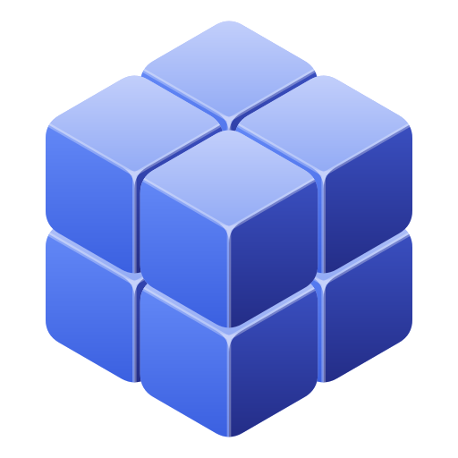
Guidelines
- The button says "Sign in" and turns into "Signing in..." while it runs. Signing out is "Sign out".
- Fields set autocomplete (
username,current-password,one-time-code) so password managers work. - A wrong username or password gets one generic error toast: "Incorrect username or password." Never say which one was wrong.
virgoOS design guide · univrs · examples are static drawings of the real UI